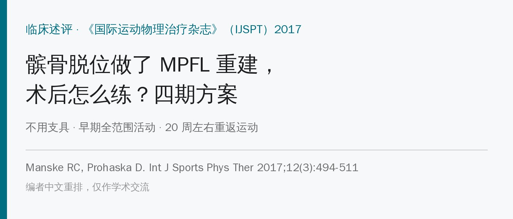
🔖原文信息（编者中文重排）
📚 文献信息
▪ Manske RC, Prohaska D. Rehabilitation following medial patellofemoral ligament reconstruction for patellar instability. Int J Sports Phys Ther. 2017;12(3):494-511.
▪ 作者来自美国威奇托州立大学物理治疗系与当地骨科诊所
▪ 临床述评，证据等级 5（专家意见）
髌骨外侧脱位多见于年轻、爱运动的人。内侧髌股韧带（MPFL）是防止髌骨向外跑的主力，在屈膝 0°～30° 时提供50%～60% 的向外限制力；髌骨脱位时它几乎都会断。
• 位置：从髌骨内缘近端一半连到股骨内髁附近，和股内侧斜肌交织在一起，平均长约 53 mm、宽约 1.9 cm
• 强度不大：原生韧带约 208 N 就会断，拉长约 26 mm（约 49% 应变）时断裂
• 非手术治疗后再脱位率不低，所以反复脱位、韧带明显断裂的人会考虑重建
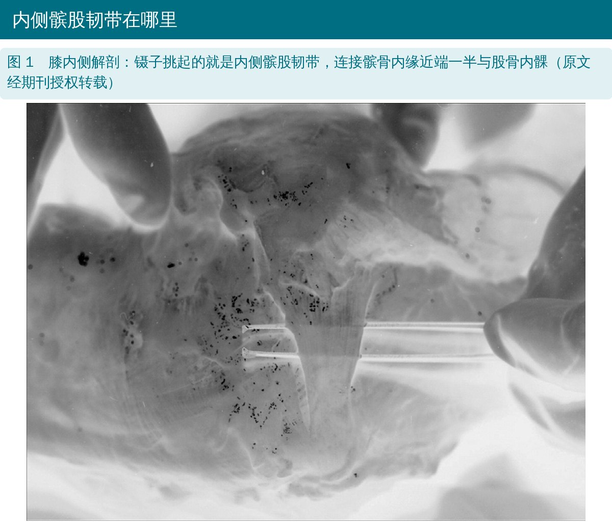
🔖原文图 1
把髌骨宽度分成 4 个“象限”。屈膝 20°～30° 让髌骨进入滑车，向内、向外推，看能移动几个象限。正常是 1～3 个；重建术后的目标是内外各约 2 个象限（半个髌骨宽）。
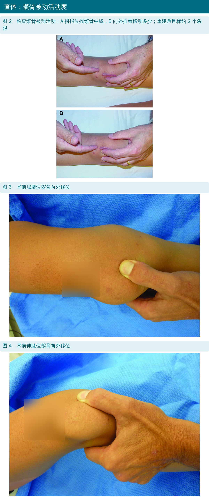
🔖原文图 2～4
原文还写了站、坐、仰卧位的完整查体：看下肢力线、股四头肌萎缩（关节线和其上 10 cm 量围度）、髌骨倾斜、恐惧试验等，这里不展开。
• 先关节镜检查髌股关节软骨，有损伤一并处理
• 移植物多用自体腘绳肌腱，也可用内收大肌、股四头肌腱一部分或异体肌腱
• 两个切口：髌骨端和股骨内髁端；移植物走关节囊外，股骨端常用透视定位
• 移植物是“缰绳”，不是“拉索”：张力只要防止过度外移，不能把髌骨往内拉住；股骨隧道太靠近端会屈膝时过紧，导致屈膝受限
• 门诊手术，术后加压包扎 + 冷疗
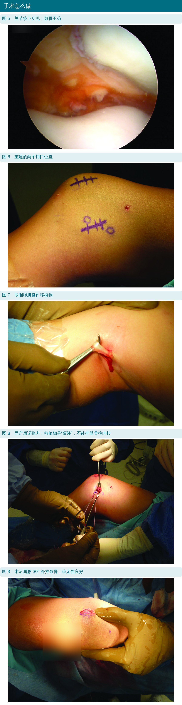
🔖原文图 5～9
作者把康复分成四期，每期给出“过关标准”：时间只是参考，达到标准才进入下一期。
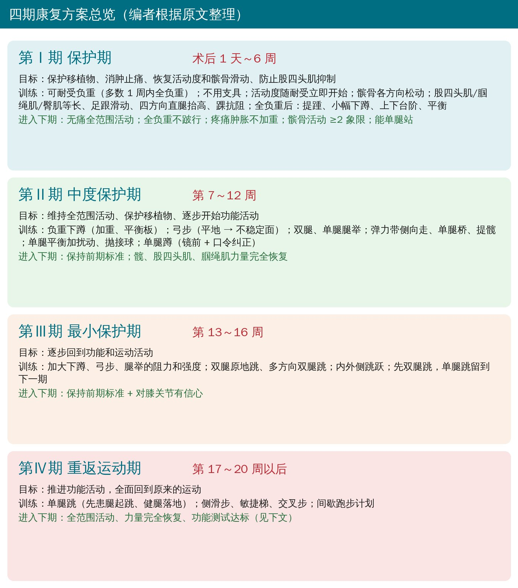
🔖四期总览
目标：保护移植物、消肿止痛、防止制动带来的不良影响、尽快恢复活动度和髌骨滑动、减少股四头肌抑制。
• 不用支具：替代移植物强度够（单股半腱肌约 1060 N、胫前肌腱约 1553 N，远高于原生韧带 208 N）；系统综述也发现早期负重、不制动和保守方案的结果差不多
• 负重：可耐受负重，2 周内过渡到全负重；作者经验多数 1 周内就能全负重，疼痛肿胀明显时第 2 周可以继续拄拐
• 消肿：冷疗、电刺激、弹力绷带或管状加压套，前 1～2 天抬高患肢
• 活动度：按术者方案开始，第一优先是完全伸直，防止屈曲挛缩
• 髌骨松动：先评估，不足 2 象限就做各方向松动（包括内外侧滑动，可用到 Ⅲ～Ⅳ 级）
• 早期练习：股四头肌、腘绳肌、臀肌等长收缩，足跟滑动，四方向直腿抬高，踝关节各方向抗阻，之后加腘绳肌弯举
• 股四头肌抑制：用神经肌肉电刺激，同时主动收缩效果更好；作者发现站着做股四头肌收缩比长坐位更有力
• 髋和躯干同步练：按肌电高低排序，从低强度动作逐步加（见文末表 1）
• 全负重无异常后：提踵、小幅下蹲、渐进上下台阶、平衡和本体感觉练习
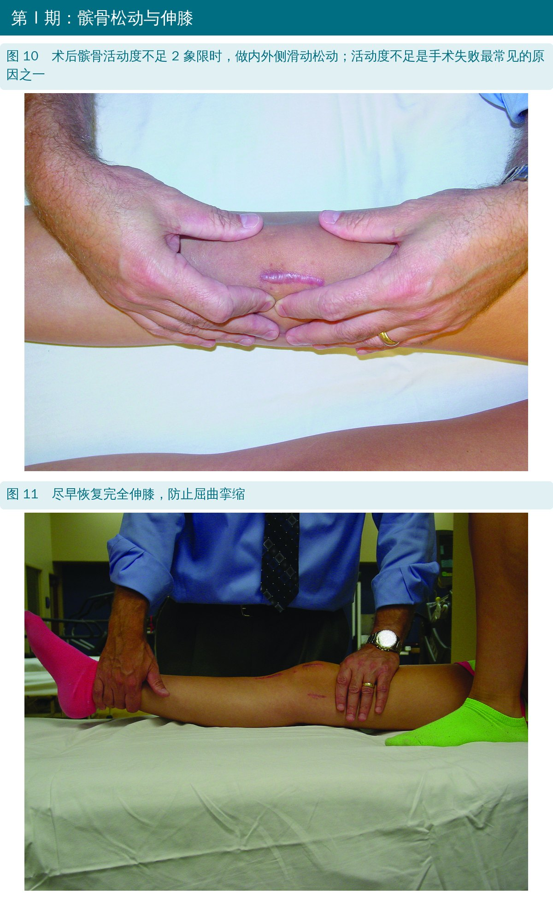
🔖原文图 10、11
进入第Ⅱ期的标准：无痛全范围活动度；全负重走路不跛；疼痛肿胀不加重；髌骨内外活动 ≥2 象限；能单腿站。
关于髌骨松动，作者明确不同意 Cheatham 等人“只做 Ⅰ～Ⅱ 级上下滑动、避免内外滑动”的做法，理由是只要固定可靠，高等级松动不会伤到移植物；而活动度不足恰恰是重建失败最常见的原因之一。
目标：维持全范围活动度、保护移植物、开始功能性活动。这时大多数限制已经解除；如果活动度还没恢复，优先处理活动度，可以用更高等级的松动和末端轻柔加压，避免关节纤维化。
• 下蹲：负重加量，或站在平衡板上加入本体感觉
• 弓步：先在平地，再到不稳定面
• 腿举：双腿和单腿都要做，确保患腿得到足够刺激
• 髋部：弹力带侧向走、单腿桥、提髋
• 平衡与扰动：从部分负重到全负重，再加抛接球等干扰
• 单腿蹲：重点盯住代偿——髋内收、内旋、膝外翻（膝内扣）；力量不够先练力量，也可以对镜 + 口令纠正
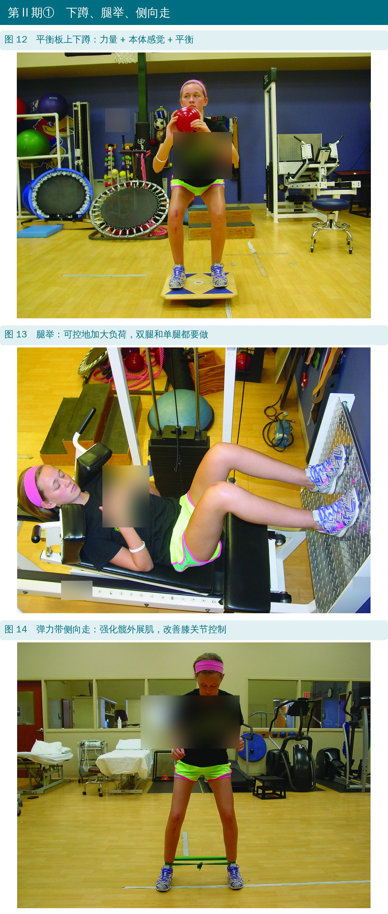
🔖原文图 12～14
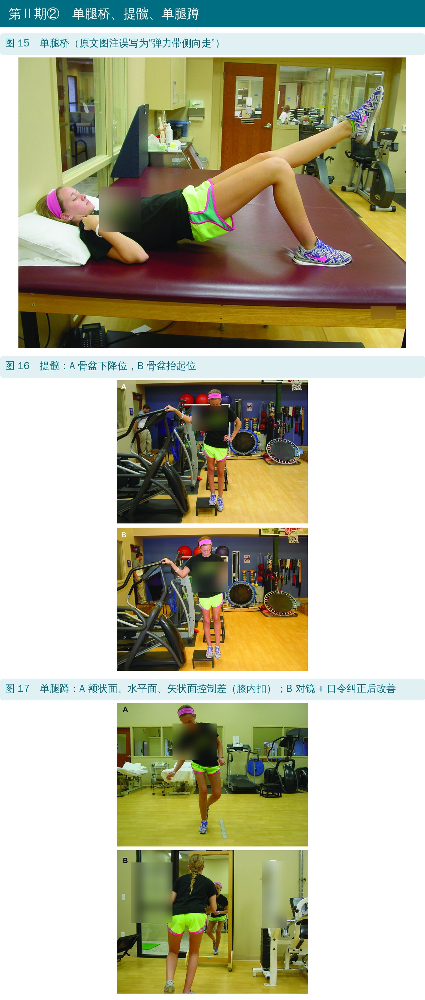
🔖原文图 15～17
进入第Ⅲ期的标准：保持前期标准，并且髋、股四头肌、腘绳肌力量完全恢复。
• 这是最短的一期，目标是逐步回到功能和运动活动
• 下蹲、弓步、腿举继续加阻力和强度，为跑跳做负荷准备
• 开始增强式训练：双腿原地小跳、多方向双腿跳；内外侧跳跃，专门给膝内外侧加应力
• 原则：先双腿跳，再单腿跳；单腿跳放到第Ⅳ期
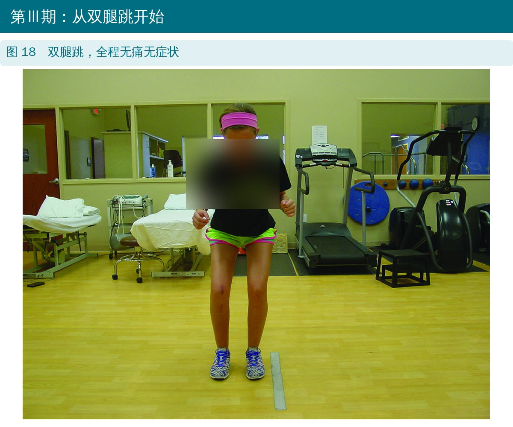
🔖原文图 18
进入第Ⅳ期的标准：保持前期标准 + 对膝关节有信心。
• 单腿跳：双腿跳舒服了再开始。先用患腿起跳、健腿落地——术后的人向心起跳通常没问题，最怕的是患腿离心落地
• 侧滑步、敏捷梯、交叉步，在可控条件下练神经肌肉控制
• 开始间歇性训练，比如重返跑步计划
• 不是每个病人都要练到这一期：不打算回到高水平运动的人可以不做
原文的出院与重返运动标准：全范围活动度、力量完全恢复、功能测试达到常模。具体是两项：
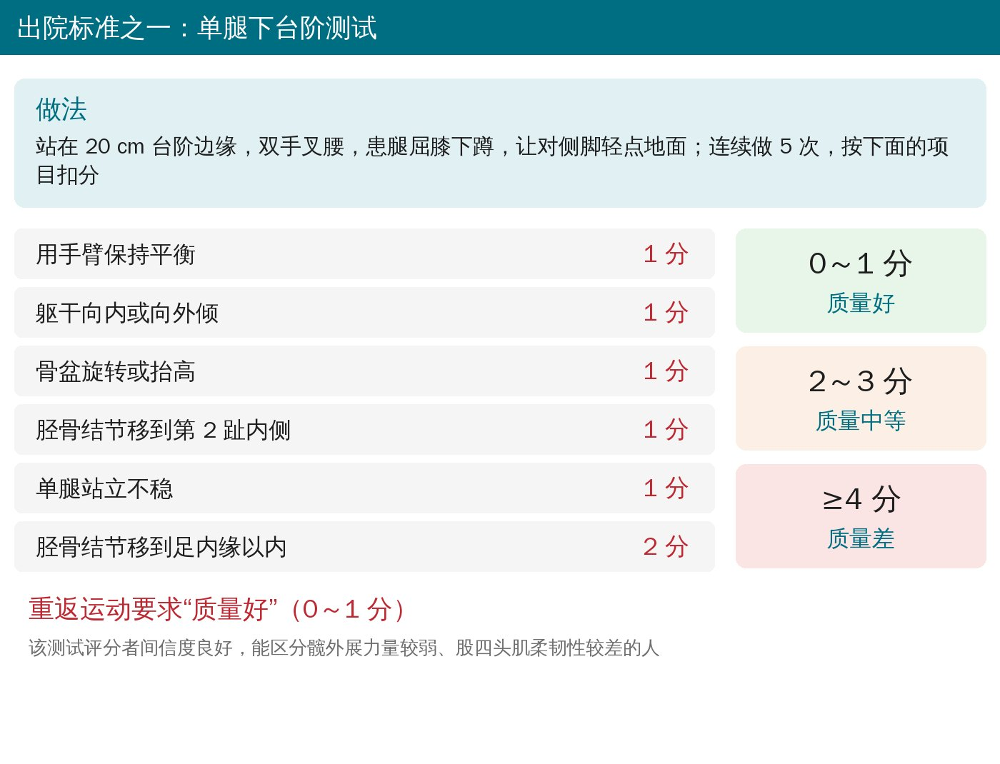
🔖单腿下台阶测试
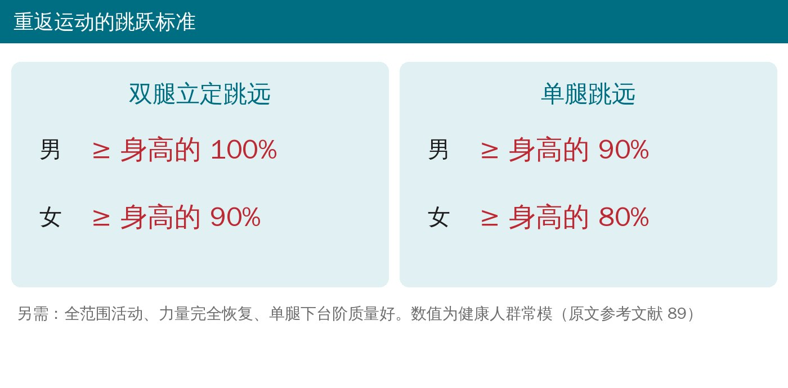
🔖跳跃标准
• 这是专家意见，不是试验：方案是作者的临床经验加文献整理，没有验证过；时间节点和标准都应该按个人情况调整
• 引用的长期结果：Nomura 等随访 24 膝平均 11.9 年，骨关节炎很少；Lippacher 等报告 100% 回到运动，53% 回到同等或更高水平
• 推荐用日常生活活动量表（ADL Scale）和运动活动量表（Sports Activity Scale）跟踪结果
• 跳跃标准来自健康人常模，不是 MPFL 术后人群的数据
原文里对不上的地方：
• 图 15 图注写的是“弹力带侧向走时髋外展肌募集很高”，但照片和正文都是单腿桥
• 第Ⅳ期在总述里写“第 17～20 周以后”，小标题又写“第 17～21 周以后”
• 表 1 标注引自文献 80，但数据是 Distefano 等的结果；其中臀大肌“侧向单腿跳 39”和“蚌式（屈髋 60°）30”与 Distefano 原始数据（分别为 30 和 39）对调了
• 髌骨高位指数写成“Insall-Savalti”（应为 Insall-Salvati），并把高位描述为比值“>1:1”，常用界值一般是 >1.2
• 图 7 图注把“isolating”拼成“solating”
• 早期不制动、不戴支具、尽早全负重，但前提是术者确认固定可靠；先跟术者对齐方案
• 盯两个数：伸膝是否完全、髌骨内外是否各有 2 个象限；不够就松动，别等
• 股四头肌抑制时，电刺激配合主动收缩，试试站立位收缩
• 髋和躯干从第一天就开始练，按肌电强度由低到高排
• 单腿蹲的膝内扣要当场纠正，镜子和口令很好用
• 跳跃顺序：双腿 → 内外侧跳 → 患腿起跳健腿落地 → 患腿单腿跳
• 重返运动用单腿下台阶 0～1 分 + 跳远达标来把关，而不是只看时间
原文表 1 常见练习的平均肌电活动排序（%MVIC）
| 臀中肌动作 | %MVIC | 臀大肌动作 | %MVIC |
|---|---|---|---|
| 侧卧髋外展 | 81 | 单腿蹲 | 59 |
| 单腿蹲 | 64 | 单腿硬拉 | 59 |
| 弹力带侧向走 | 61 | 转身弓步 | 49 |
| 单腿硬拉 | 58 | 向前弓步 | 44 |
| 侧向单腿跳 | 57 | 侧向弓步 | 41 |
| 转身单腿跳 | 48 | 侧卧髋外展 | 39 |
| 转身弓步 | 48 | 侧向单腿跳 | 39* |
| 向前单腿跳 | 45 | 蚌式（屈髋 60°） | 30* |
| 向前弓步 | 42 | 转身单腿跳 | 35 |
| 蚌式（屈髋 30°） | 40 | 向前单腿跳 | 35 |
| 侧向弓步 | 39 | 蚌式（屈髋 30°） | 34 |
| 蚌式（屈髋 60°） | 38 | 弹力带侧向走 | 27 |
* 按原文照录。Distefano 等原始数据中，侧向单腿跳为 30、蚌式（屈髋 60°）为 39，两者在本表中对调。
欢迎关注骨科康复小黄公众号，获取更多物理治疗的专业知识！
📄参考文献：
Manske RC, Prohaska D. Rehabilitation following medial patellofemoral ligament reconstruction for patellar instability. Int J Sports Phys Ther. 2017;12(3):494-511.
原文版权归作者与期刊所有，PDF 未标注知识共享协议。本文仅为学术交流用的中文解读，照片引自原文图 1～18（编者加中文标注，衣服、墙面文字和皮肤标记已模糊；原文图 1 为期刊授权转载），四期总览和测试卡为编者中文绘制，表格为编者翻译，如有侵权请联系删除。